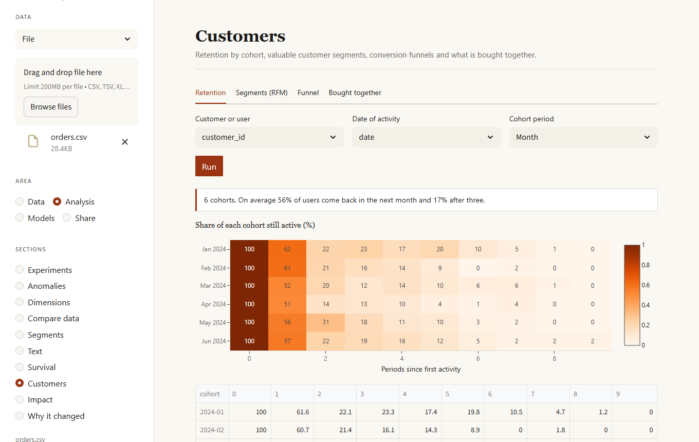
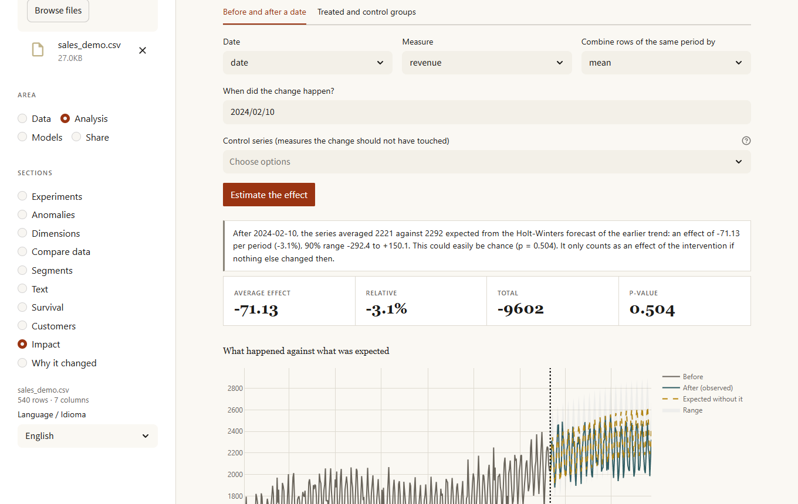

Data analysis that stays on your machine.
Load a dataset and let the autopilot take a first pass, fix its quality, compare a dozen models and see where they fail, forecast, study customers and the effect of a change, watch a source over time and keep everything you built. No account, no upload. Language features run on a local model.

What it does
One dashboard and one command line, built around work you can repeat: every cleaning step is a recipe, every model a package, every result a file you can share.
Autopilot
A first full analysis in one click: it cleans, finds patterns, models a column and forecasts dates, then writes a summary and what to do next.
Feature ideas
Tries ratios, products and other new columns and keeps the ones that make a model better, as steps you can replay.
Quality and cleaning
Score the data, find missing-data patterns, fill smartly, merge similar spellings, catch near-duplicates and enforce your own rules. Every fix is undoable.
Model lab
Up to twelve models, plus ensembles and an optional PyTorch network, cross-validated and tuned. Data leaks flagged, Shapley explanations, honest ranges, "what would change it" and a fairness check.
Forecasting
Five models tested on the past, an honest range from real errors, level and trend changes, special dates and one forecast per group.
Monitoring
Keep a baseline and check new data for drift, quality, rule violations and prediction shifts, with alerts and history.
Experiments
The right statistical test is chosen for you, with effect sizes. A/B tests with sample-size planning, and a screen of every column corrected for many comparisons.
Customers and impact
Retention by cohort, valuable segments, funnels, what is bought together, and whether a campaign really moved the numbers.
Survival
How long until something happens, counting the cases that have not happened yet, with a test between groups.
Text
Key terms, themes, tone and a classifier for comments and reviews, plus an optional summary from a local model.
Panel and reports
Pin the numbers and charts you care about, with global filters, and export one self-contained page.
Export and connections
Excel workbooks, Parquet, databases, shared Google Sheets and cloud storage, both ways.
Reproducible
Save a whole project in one file, replay the recipe on new data or export it as a Python script.
Serve a model
One command turns a saved model into a small JSON API that listens only on your computer unless you give it a token.
In English and Spanish
A language menu in the dashboard, and reports as web pages or PDF.
Screens
The dashboard follows your light or dark setting.







Install
Requires Python 3.12 or newer.
Add extras with kikolens[cloud], [postgres], [mysql], [torch] or [all].
Keeps KikoLens in its own environment and puts the kikolens command on your path.
Then open http://localhost:8501.
Then run it
Drop a CSV, Excel or Parquet file into the sidebar. Everything runs at localhost.
From the terminal
Optional: local language model
Install Ollama to ask questions in plain language and summarize text. Without it, everything else still works.
Private by design
- Your data is read from and written to your own disk.
- No telemetry, no account, no network calls unless you load a URL or a cloud source.
- SQL you type is validated as read-only before it runs.
- The model API listens only on this computer unless you give it a token.
- Formulas use a small safe interpreter, never
eval. - Excel exports store text starting with
=as text, not as a formula. - MIT licensed and open source.